Пробиолог Форте № RU.77.99.11.003.Е.001789.04.17 от 12.04.2017.
Пробиолог № RU.77.99.88.003.Е.011852.12.14 от 08.12.2014 г.
Пробиолог СРК №RU.77.99.11.003..002958.07.18 20.07.2018.
Пробиолог № RU.77.99.88.003.Е.011852.12.14 от 08.12.2014 г.
Пробиолог СРК №RU.77.99.11.003..002958.07.18 20.07.2018.
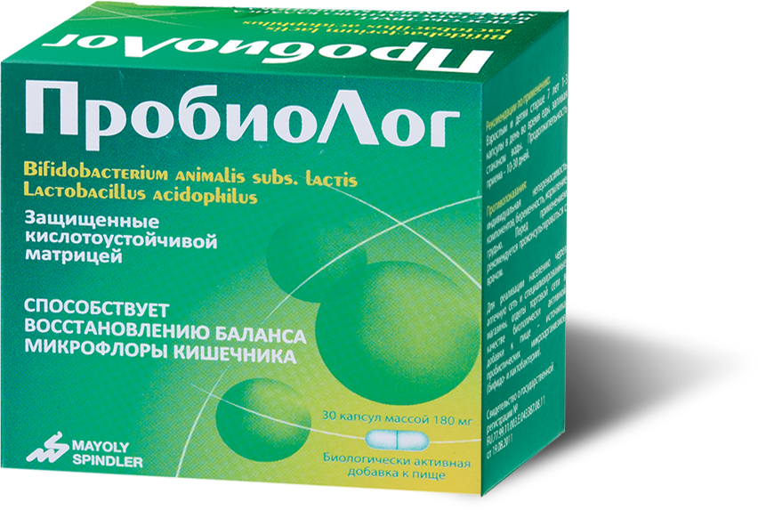
Натуральная микрофлора*
от 1 млрд. бактерий
в 1 капсуле
Когда кишечник занемог, скорей прими Пробиолог!
От 1 миллиарда бактерий в 1 капсуле
- 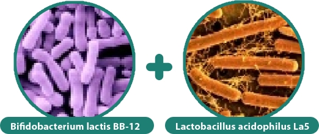
- 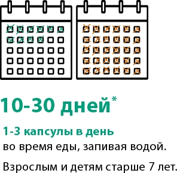
- 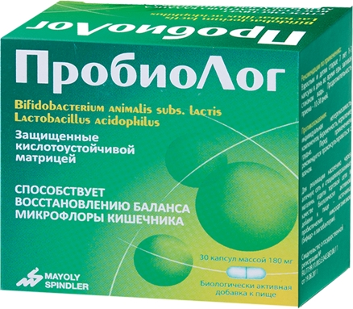
* Инструкция по применению Пробиолога
- 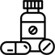
Прием антибиотиков
-
Дисбиоз
-
Вирусная и бактериальная диарея
-
Комплексное укрепление иммунитета
- Во время вспышек инфекции
- После перенесенных заболеваний
* Инструкция по применению Пробиолога
В чем преимущества Пробиолога?
Когда кишечник занемог, скорей прими Пробиолог!
От 1 миллиарда бактерий в 1 капсуле
* Инструкция по применению Пробиолога
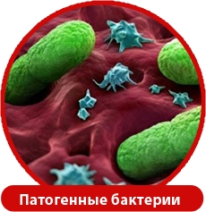
Бифидобактерии защищают клетки кишечника от патогенных бактерий*
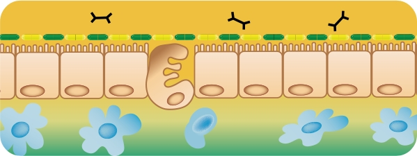
Бифидобактерии стимулируют иммунный ответ организма через синтез иммуноглобулина А (повышается сопротивляемость организма вирусным инфекциям)
* Е.А. Корниенко «Современные принципы выбора пробиотиков», «ДЕТСКИЕ ИНФЕКЦИИ» 2007б № 3б с. 64-69
Когда кишечник занемог, скорей прими Пробиолог!
Пожалуйста, подтвердите, что Вы являетесь медицинским работником для доступа в данный раздел.
Антибиотико-ассоциированная диарея
Тройная эрадикация Хеликобактер пилори
Рандомизированное мультицентровое двойное слепое плацебо-контролируемое исследование эффективности и безопасности лакто и бифидобактерий
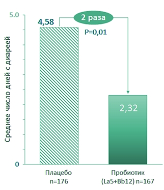
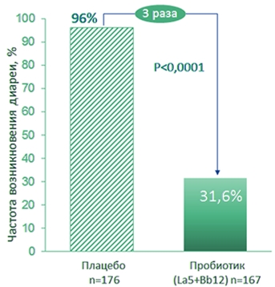
Пробиолог
- в 2 раза сокращает продолжительность диареи, обусловленной приемом антибиотиков
- помогает:
- предотвратить развитие антибиотико-ассоциированной диареи
- в 3 раза уменьшить тяжесть диареи при ее возникновении
Bhalla A. et al., J Clin Pharmacol., 2011; Chat terjee S. et al., 2013
Штаммы Пробиолога восстанавливают долю бифидобактерий в микробиоте толстой кишки по сравнению с тройной эрадикационной терапией
(антибиотик+ингибитор протонной помпы + метронидазол)
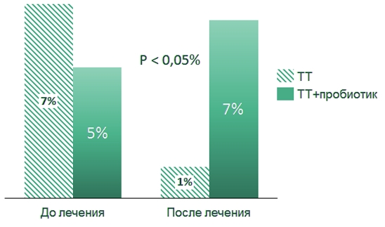
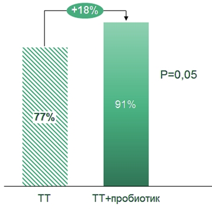
Sheu B.S. et al., Aliment Pharmacol Ther., 2002